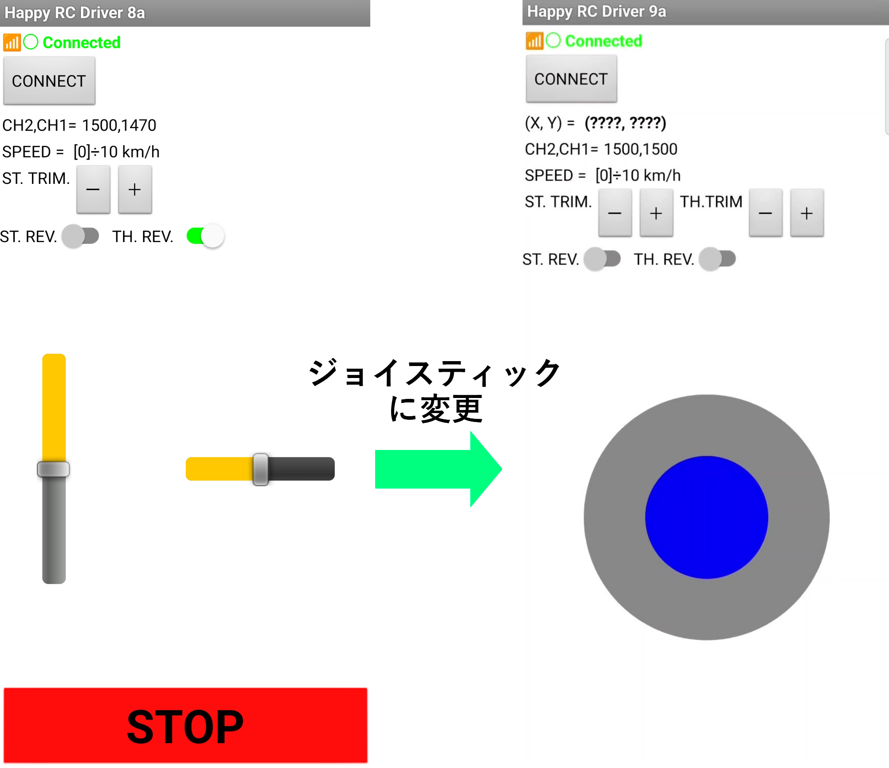
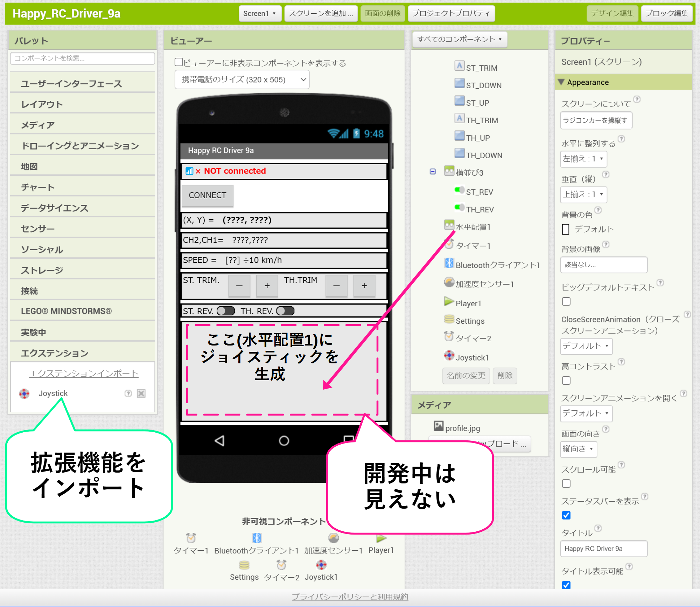
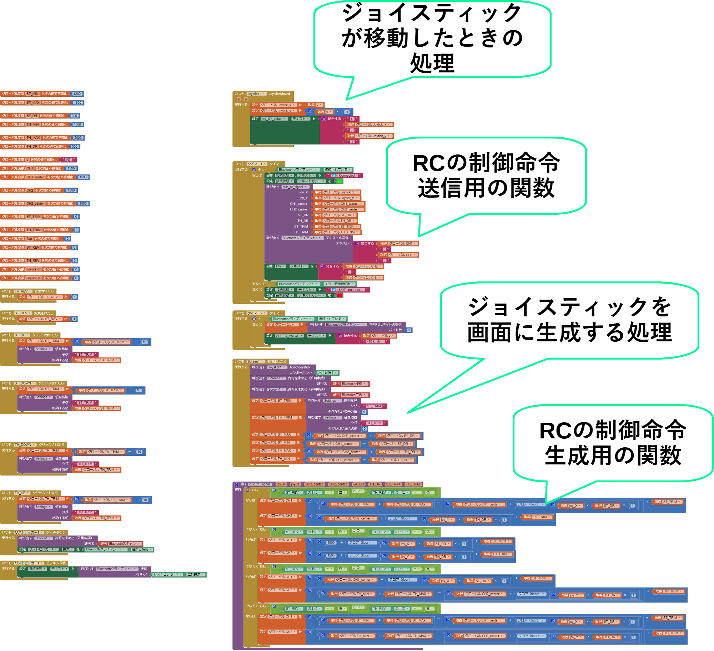

～ 目次 ～
1. 今回やったこと
今まではスライダを使ってラジコンを操縦していましたが、スライダをやめてジョイスティックで操作できるようにしました！

2. 拡張機能開発の手順
2.1. Javaの勉強
ラジコンアプリ（Happy_RC_Driver）は MIT App Inventor 2(AI2)を使って開発を進めていたので、AI2の拡張機能としてジョイスティックを実装しようと考えました。
AI2はノーコードでアプリを開発することができますが、拡張機能の開発にはJavaによるコーディングが必要でした。Javaは使ったことがなかったので、Paizaラーニングを使ってJavaの勉強から始めました。
拡張機能の作成方法も分からなかったので、インターネットの記事やYouTube動画を参考にしながら勉強しました。
2.2. 開発環境の構築
2.3. Java 8、Apache Antのインストール
インストールはYouTube動画1,2を見ながらやりました。環境変数の設定などがあるので少し難しかったですが、動画を確認しながら作業したら開発環境を無事セットアップできました。
環境のセットアップができたら、構築した環境で拡張機能をビルドできることを確認しました。拡張機能のビルド方法は次に説明します。
2.4. 拡張機能のビルド
拡張機能の開発、ビルドはインターネットの記事3を参考に行いました。まず、GitHubのewpatton氏が作成したAI2の拡張機能用のテンプレート4をクローンします。
拡張機能開発用のプロジェクトのディレクトリ構成はこんな感じです↓
├─build（☆）
│ ├─classes
│ │ └─com
│ │ └─extensions
│ │ └─joystick
│ ├─externalComponents
│ │ └─com.extensions.joystick
│ │ └─files
│ └─externalComponents-classes
│ └─com.extensions.joystick
│ └─com
│ └─extensions
│ └─joystick
├─lib（☆）
│ ├─ant-contrib
│ ├─appinventor
│ │ ├─arm64-v8a
│ │ ├─armeabi-v7a
│ │ └─x86_64
│ ├─deps
│ └─proguard
├─out（☆）
├─src（☆）
│ └─com
│ └─extensions
│ └─gradient
│ └─aiwebres
Windowsであれば、PowerShell 7などでホームディレクトリに移動してからlsコマンドを押すと、（☆）のフォルダ名が表示（「build」, 「lib」,「out」,「src」の4つ ）されます。
拡張機能のソースコード名をJoystick.javaとすると、「src/com/extensions/gradient/Joystick.java」の位置にソースコードを作成します。このソースコードに拡張機能として実装したい処理を記述するという流れです。
処理が記述できたら、拡張機能のホームディレクトリでコンソールを（今回はPowershell 7を使用）開いて「ant extensions」というコマンドを打ちます。
拡張機能のホームディレクトリをCドライブの直下にした場合は、下のような感じでビルドします。
C:\[拡張機能のホームディレクトリ名]> ant extensionsビルドのコマンドを打つと、「out」ディレクトリに拡張機能のファイルが生成します。
今回の場合は、ソースコードJoystick.javaのpackage名で指定した「com.extensions.gradient.aix」が拡張機能のファイル名になります。ちなみにインポートしたときの拡張機能名はJavaのソースファイル名になります。
なので今回の場合は、AI2上では「Joystick」という名前でインポートした拡張機能が表示されます。
3. プログラム
ここでは拡張機能のソースコード、アプリのブロックを載せます。ラジコンに搭載されているマイコンのプログラムはHappy_RC_Driverのver.8aと同じものを使います。
3.1. 拡張機能のソースコード：Joystick.java
AI2の任意のレイアウトコンポーネントにJoystickを生成する拡張機能です。プログラムの説明はコメント文に書きました。Android関連のクラスに関する詳細な説明は、Android Developersのページやブログに書かれています5,6,7。
このした拡張機能は、AI2(MIT App Inventor 2)内で指定した横並びレイアウトや縦並びレイアウトにJoystickを生成することができます。
こちらをApache Antを使ってビルド（2.4. 拡張機能のビルド）することで、拡張機能のファイル（.aix）を作成できます。ビルドした拡張機能をAI2にインポートすることで、ジョイスティックが利用できます。
/* AI2用のジョイスティック拡張機能 */
package com.extensions.joystick; // 一番右が.aixの名前になる
// 拡張機能を作るためのクラスやアノテーション
import com.google.appinventor.components.annotations.DesignerComponent;
import com.google.appinventor.components.annotations.SimpleObject;
import com.google.appinventor.components.annotations.SimpleFunction;
import com.google.appinventor.components.annotations.SimpleEvent;
import com.google.appinventor.components.annotations.SimpleProperty;
import com.google.appinventor.components.common.ComponentCategory;
import com.google.appinventor.components.runtime.AndroidNonvisibleComponent;
import com.google.appinventor.components.runtime.AndroidViewComponent;
import com.google.appinventor.components.runtime.ComponentContainer;
import com.google.appinventor.components.runtime.EventDispatcher;
// 詳細がAndroid developersのページに書いてある
import android.graphics.Canvas; // キャンバスを扱うためのクラス
import android.graphics.Paint; // ペイントを扱うためのクラス
import android.graphics.Color; // 色を扱うためのクラス
import android.view.MotionEvent; // タッチイベントを扱うためのクラス
import android.view.View; // 文字やボタンなどの部品を扱うためのクラス
import android.view.ViewGroup; // レイアウトを扱うためのクラス
//「拡張機能」カテゴリーの下部に表示されるアノテーション
@DesignerComponent(version = 1,
category = ComponentCategory.EXTENSION,
description = "This is an extension to generate a joystick on your layout component.",
nonVisible = true,
iconName = "https://github.com/TomokiIkegami/Happy_RC_Driver_extentions/blob/main/icon.png?raw=true")
// 拡張機能と内部コンポーネントの区別に使うアノテーション
@SimpleObject(external = true)
// 自作の拡張機能に関するメインクラス
public class Joystick extends AndroidNonvisibleComponent {
// コンストラクタ（インスタンス生成時に実行される）
public Joystick(ComponentContainer container) {
super(container.$form());
}
// Write your code here.
// Error Occured メソッドはここで定義
// @SimpleEventは黄色のイベントブロックになる
@SimpleEvent(description = "This event will be triggered when an error occures")
public void ErrorOccured(String error) {
// 引数1:"this"は現在イベントが発生しているスクリーンを指す
// 引数2:"ErrorCccured"はイベント名
// 引数3:"error"をパスする。メソッドが持つ引数をすべてパスする必要がある（今回はerrorだけだけど）。
EventDispatcher.dispatchEvent(this, "ErrorOccured", error);
}
// ジョイスティックをレイアウトコンポーネントにアタッチするメソッド
// @SimpleFuncitonは紫いろのブロックになる
@SimpleFunction(description = "This block will attach the joystick to a layout component")
public void AttachJoystick(AndroidViewComponent component) {
try {
JoystickView joystickView = new JoystickView(component.getView().getContext(), this);
((ViewGroup) component.getView()).addView(joystickView);
} catch (Exception e) {
ErrorOccured(e.getMessage());
}
}
// ジョイスティックの移動イベント
// @SimpleEventは黄色のイベントブロックになる
@SimpleEvent(description = "This event will be triggered when the joystick is moved")
public void JoystickMoved(float x, float y) {
EventDispatcher.dispatchEvent(this, "JoystickMoved", x, y); // ジョイスティックが移動したらイベントを発生
}
// ジョイスティック機能のための内部クラス
public class JoystickView extends View {
private float centerX, centerY, baseRadius, hatRadius; // centerX, Y: 中心座標（x, y）、baseRadius: ジョイスティックのベース部分の半径、hatRadius: ジョイスティックのハットの半径
private Paint basePaint, hatPaint; // basePaint: ベース半径、hatPaint: ハット半径
private float joystickX, joystickY; // ジョイスティックのx, y 座標
private boolean isTouched; // タッチされているかどうかのフラグ
private Joystick parent; // 親クラスのインスタンスを保持する変数
// コンストラクタ
public JoystickView(android.content.Context context, Joystick parent) {
super(context); // 親クラスのコンストラクタを呼び出す
this.parent = parent; // 親クラスのインスタンスを取得
initJoystick(); // ジョイスティックの初期化メソッドを呼び出す
}
// ジョイスティックの初期化メソッド
private void initJoystick() {
// 色と塗りつぶしを指定
basePaint = new Paint();
basePaint.setColor(Color.GRAY);
basePaint.setStyle(Paint.Style.FILL_AND_STROKE);
hatPaint = new Paint();
hatPaint.setColor(Color.BLUE);
hatPaint.setStyle(Paint.Style.FILL_AND_STROKE);
// 初めはタッチされていない状態に設定
isTouched = false;
}
@Override
protected void onDraw(Canvas canvas) { // このクラスは現在のクラスとサブクラスからのみアクセスできる（protectedなので）
super.onDraw(canvas);
if (!isTouched) { // タッチされていないときにジョイスティックを中心に戻す
// x, y の中心座標を計算(Width: コンポーネントの横幅、Height: コンポーネントの縦幅)
centerX = getWidth() / 2;
centerY = getHeight() / 2;
// ベース部分とハット部分半径を設定
baseRadius = Math.min(getWidth(), getHeight()) / 3;
hatRadius = baseRadius / 2;
joystickX = centerX;
joystickY = centerY;
}
// ジョイスティックの描画
canvas.drawCircle(centerX, centerY, baseRadius, basePaint);
canvas.drawCircle(joystickX, joystickY, hatRadius, hatPaint);
}
@Override
public boolean onTouchEvent(MotionEvent event) { // ジョイスティックがタッチされた時の処理
// タッチされた位置のx,y座標を取得
float x = event.getX();
float y = event.getY();
switch (event.getAction()) {
case MotionEvent.ACTION_DOWN: // タッチ押下時
case MotionEvent.ACTION_MOVE: // 指を持ち上げずにスライドした時
float distance = (float) Math.sqrt(Math.pow(x - centerX, 2) + Math.pow(y - centerY, 2));
if (distance < baseRadius) { // タッチされた位置がベース部分の範囲内なら、x,y 座標をそのまま代入
joystickX = x;
joystickY = y;
} else { // タッチされた位置がベース部分の範囲外なら、ベース部分の範囲内に収める
float ratio = baseRadius / distance;
joystickX = centerX + (x - centerX) * ratio;
joystickY = centerY + (y - centerY) * ratio;
}
isTouched = true; // タッチされているフラグを立てる
parent.JoystickMoved(getJoystickX(), getJoystickY()); // ジョイスティックが移動したらイベントを発生
break;
case MotionEvent.ACTION_UP: // 指を離したとき
// ハットの位置を中心に戻す
joystickX = centerX;
joystickY = centerY;
isTouched = false;
parent.JoystickMoved(0, 0);
break;
}
invalidate(); // 既に開始されているセッションを無効にする
return true;
}
// ジョイスティックのx, y 座標を取得するメソッド（baseRadiusで割っているのは正規化のため）
public float getJoystickX() {
return (joystickX - centerX) / baseRadius;
}
public float getJoystickY() {
return (joystickY - centerY) / baseRadius;
}
}
}
3.2. AI2(MIT App Inventor 2)のプログラム
3.2.1. 外観
下の画像は、AI2の「デザイン編集」タブで見たアプリの外観です。拡張機能で画面下部の余白（「水平配置1」コンポーネント）にジョイスティックを生成しますが、この画面では見た目を確認することができません。AIコンパニオンでエミュレートして、実機のスマホで見た目を確認しながら開発するのが良いと思います。

3.2.2. 中身
こちらが「ブロック編集タブ」で表示したアプリの中身です。アプリの主な動作としては主に
- アプリ起動時に画面上にジョイスティック生成
- ジョイスティックのx,y座標からラジコンの制御命令（PWMのパルス幅）を生成
- 制御命令の送信
を行っています。ラジコンのコントローラー（プロポ）でよく見るトリム（TRIM）やデュアルレート（D/R）の処理を入れているので、制御命令生成用の関数の中身が少しぐちゃぐちゃしてます（笑）

4. 動画
アプリ開発の様子から、アプリのインストール、操縦実験までの流れを動画にまとめました！
5. サンプルファイル
今回の記事で紹介したアプリのサンプルファイルはこちらになります。好きなデザインに変更するなり自由に使っていただければと思います。
～ MIT App Inventorプロジェクトのファイル(.aia) ～
～ ビルド済み Androidアプリのファイル(.apk) ～
6. まとめ
MIT App Inventor 2の拡張機能開発はずっと前からやってみたかったので、できて嬉しかったです。手軽に開発できるノーコードのメリットと、かゆい所に手が届くテキストベースのコード開発を組み合わせて開発できるのは便利だなと感じました。テキストベースのコーディングも、ネット記事とかChatGPTとかのおかげでスムーズに開発できて技術の進歩による恩恵を感じました。
今回開発したジョイスティックはラジコン以外にもゲームとか色んな用途に使えるので、作れて良かったなと思いました！

7. 関連記事
8. 参考文献
-
Dreamers Lab、「4-Setting Up Environment - Installing Java 8 | Extension Development Course」、YouTube、(https://www.youtube.com/watch?v=HoQFcWg4UkI) ↩︎
-
Dreamers Lab、「5-Setting Up Environment - Installing Apache Ant | Extension Development Course」、YouTube、(https://www.youtube.com/watch?v=r7RcWTLDt1E&list=PLhwxj7g1ZSM2VQ96F9dx3mVjv79eq5-_C&index=6) ↩︎
-
Shreyash Saitwal、「Writing your first App Inventor 2 extention」、Medium、(https://saitwalshreyash19.medium.com/) ↩︎
-
ewpatton、「MIT App Inventor Extensions」、GitHub、(https://github.com/mit-cml/extension-template/tree/master) ↩︎
-
Google、「Develop > Reference > Color」、Android Developers、(https://developer.android.com/reference/android/graphics/Color#color-instances) ↩︎
-
IKURA TATSUO、「ビューとビューグループ」、JavaDrive、(https://www.javadrive.jp/android/activity/index4.html#google_vignette) ↩︎
-
@mhidaka、「タッチイベントを取得する」、TechBooster、(https://techbooster.org/android/application/715/) ↩︎